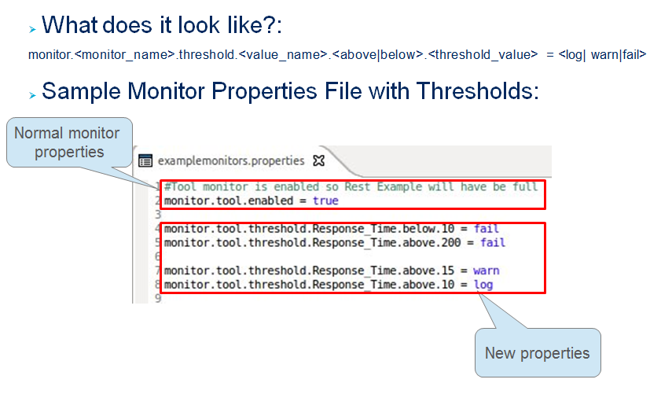
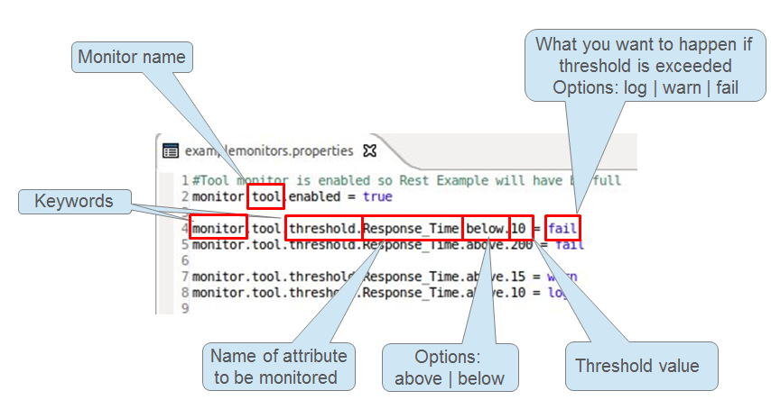

Introduction
In this section we will bring the user through setting up TAF for the first time. First and for most please read the Introduction section which includes what TAF is about in slides on how it works and videos on getting started. These should give the user a good start on creating a new project.
TAF JavaDoc
https://arm1s11-eiffel004.eiffel.gic.ericsson.se:8443/nexus/content/sites/tor/ERICtaf_util/
Environment - Eclipse, Maven, GIT
Setting up the enviroment for the first time. TAF projects is a maven project. What is Maven? Look here
In order to run TAF the user will need the following
- Eclipse E4e (ericssons version of eclipse)
- Maven apache server
- Maven Plugin for eclipse
- Groovy Plugin for eclipse - not really required but may be needed to veiw taf-core when trouble shooting and Java docs in eclipse
- EGit plugin for eclipse
Development Environment
The link below will show the user from the TAF teams setup how to setup the envornments from scratch. Please note to check your own team if they have there own Enviroment setup.
Development Environment Setup - This link contains instructions to setup Eclipse E4E, GIT, Maven Apache Server, EGIT (eclipse plugin) JBoss, JDK.
Maven plugin
Follow this link below to install Maven m2e for Eclipse. Eclipse market place plugin may also need to be installed
http://marketplace.eclipse.org/content/maven-integration-eclipse#.UWbI7lROixo
Groovy Plugin
Follow this link below to install Groovy. Eclipse market place plugin may also need to be installed
http://marketplace.eclipse.org/content/groovy-eclipse-juno#.UWbJh1ROixo
Other Installations
Within your team you may need the following but please check with your team.
- GIT –> This can be found in the in the link above to show you how to setup GIT and set SSH Key.
- Jboss Application server – depending on your project you may use JBoss Please check with your team
JBoss
The CM mediation Team have created a good setup with pre-written Standalone file that will give a quick setup of JBoss. The link below shows the user how to setup.
Good JBoss Setup from CM Mediation Team Click here NOTE: This is not Managed by TAF
AVS
AVS is used to firstly store your test cases that have been created using FreeMind. Freemind is a tool that allows the user to map out the test cases they wish to use. The freemind map for each team can then be stored in the AVS webpage https://cifwk-oss.lmera.ericsson.se/. The Freemind map will then be taken and converted into Test cases structure of TAF when uploaded to the website. The user can then take the code produced and continue to write your code. Please see slides on introduction page on AVS
- Get Freemind AVS template - AVS Template
- Use template to create freemind map of Test cases
- Upload AVS template to website https://cifwk-oss.lmera.ericsson.se/
- Download zip file of generate TAF testcases
- Add Test case classes and add suite.xml in src/resource folder
- User can now add their code to the test structure or Archtype
Archtype
The Archtype is a Maven template project that has already been setup with TAF to run Test cases. It comes with example testcases for remote file handling and also a Rest example.
For starting out this is a quick and easy way of starting off with using TAF to setup your Test cases.
The link below will explain how to run the Archtype command using the maven apache server to generate the project. Once this is completed simply import the Maven Project into eclipse run the example test cases to see it working. The Team can now use this project as there
NOTE: The user will have to change the package names to name the project has been given when creating the Archtype. This is not automatically generated from the Archtype.
The user has now all essential tools to start creating Test cases.
TAF on Linux HUB - for people working in the HUB to generate the archtype and have issues with the maven settings xml
Things you should know when getting started
TAF package comes complete with handlers for JBoss, RMI etc. TAF uses properties files to store Host connections and for its monitoring and threshold functionality which is used to chart for example CPU, Memory etc usage when testcases are run. This is linked to the JCat report that is produced by TAF once completed. Please see inside TAF for more information Inside TAF
DataHandlers
From the properties file the user can get this information by using the Datahandler class to retrieve property information that is stored in the resource folder , on the classpath or in the project folders. Data Handler can also get OS Eviroment properties aswell and is a central point for data retreival. This class can be used to get the Host properties that is needed for example to add into the JBoss handlers. For example:
NOTE: All property files must be stored in src/main/resources/taf_properties in the project folder.
Example: get all JBOSS instances
/**
* Get all the host objects from all data sources and return in a list
* @return a list of Host objects.
*/
public static List<Host> getHosts() { ... }
List<Host> result = new ArrayList<Host>();
for (Host potentialNode : DataHandler.getHosts()){
if (potentialNode.getType() == HostType.JBOSS)
result.add(potentialNode);
}
return result;
Example: get my first node
Host host = Datahandler.getHostByName("sc1");
The Host Properties file value takes the form.
host.hostname.property = value
host.hostname.node.nodename.property = value
Example Host Properties file
host.sc1.type=sc1 host.sc1.ip=10.12.1.17 host.sc1.user=root host.sc1.pass=12shroot host.sc1.port.ssh=22 host.sc1.node.firstNode.type=jboss host.sc1.node.firstNode.port.http=8080 host.sc1.node.firstNode.user=admin host.sc1.node.firstNode.pass=adminPass host.sc1.node.firstNode.port.jmx=9999 host sc1.node.secondNode.type=jboss host.sc1.node.secondNode.port.http=8081 host.sc1.node.secondNode.port.jmx=10000 host.sc1.node.secondNode.user=admin host.sc1.node.secondNode.pass=adminPass
Monitoring
Please see this link to slides on monitoring and the basic setting up of properties files for Monitoring
Thresholds

{kind=link}
{kind=link}